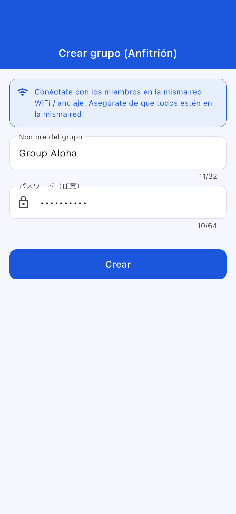
Nombre de la aplicación: OffLink
Público objetivo: Cualquier persona que desee realizar llamadas de voz grupales dentro de la misma red WiFi
Fecha de creación: 9 de marzo de 2026
Última actualización: 11 de abril de 2026
OffLink es una aplicación que permite realizar llamadas de voz grupales sin conexión a Internet, dentro de la misma red WiFi o conexión compartida. Mediante comunicación P2P con WebRTC, ofrece llamadas de voz con latencia mínima.
Ejemplos de uso:
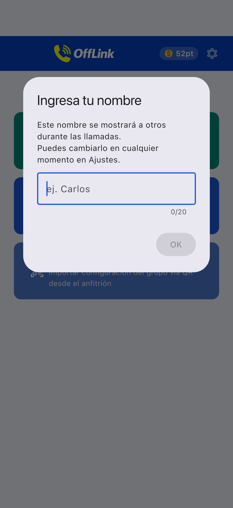
Pantalla de inicio tras abrir la aplicación. Comience utilizando los tres botones en la parte inferior.
OffLink funciona en modo WiFi LAN. Todos los participantes deben estar conectados a la misma red WiFi. El dispositivo anfitrión inicia un servidor de señalización y las llamadas de voz se realizan entre los dispositivos de la misma red.
Punto clave: No se necesita conexión a Internet.
| Rol | Dispositivos compatibles | Descripción |
|---|---|---|
| Anfitrión | Android / iPhone | Dispositivo que inicia el servidor de señalización y gestiona la llamada |
| Invitado | Android / iPhone | Dispositivo que se une a la llamada creada por el anfitrión |
Nota: Todos los participantes deben estar conectados a la misma red WiFi.
| Permiso | Uso | Impacto si se deniega |
|---|---|---|
| Micrófono | Llamadas de voz | No se pueden realizar llamadas |
| Cámara | Escaneo de código QR | No se puede registrar un grupo por QR |
| Dispositivos cercanos (WiFi) ※Android | Detección de red WiFi | No se puede detectar al anfitrión |
| Ubicación ※Android | Escaneo WiFi (requisito del sistema) | No se puede obtener el SSID del WiFi |
| Bluetooth ※Android | Conexión con auriculares | No se pueden usar auriculares |
| Notificaciones ※Android | Notificaciones de invitación a llamada | Sin notificaciones en segundo plano |
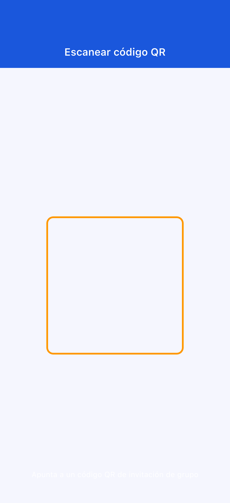
Si denegó un permiso por error: vaya a «Ajustes» → «Aplicaciones» → «OffLink» para modificar los permisos.
Inicie una llamada al instante sin necesidad de crear un grupo previamente.
Paso 1: Todos los participantes se conectan al mismo WiFi
Paso 2: Toque «Llamada inmediata» (botón verde)
Paso 3: Introduzca su nombre de usuario
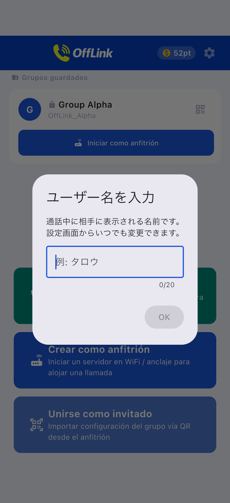
Paso 4: Seleccione un nivel e inicie la llamada (→ 3-5. Sistema de puntos)
Paso 5: Se envía automáticamente una invitación a los miembros de la misma red WiFi
Si ya existe un anfitrión, puede elegir entre unirse o iniciar una nueva llamada.
Paso 1: Toque «Crear como anfitrión» (botón azul)
Paso 2: Introduzca el nombre del grupo y una contraseña (opcional), luego toque «Crear»

Consejo: Elija un nombre de grupo fácil de identificar. Se recomienda establecer una contraseña.
Paso 3: Seleccione la acción de creación
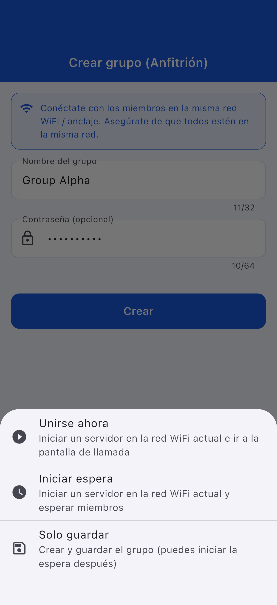
| Acción | Descripción |
|---|---|
| Unirse ahora | Inicia el servidor y accede a la pantalla de llamada |
| Iniciar en espera | Inicia el servidor y permanece en espera |
| Solo guardar | Se puede iniciar más tarde |
Paso 1: Toque «Unirse como invitado» (botón celeste)
Paso 2: Seleccione el método para unirse
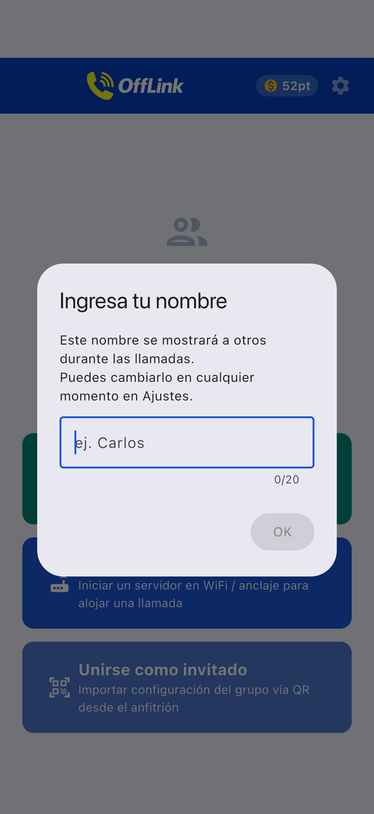
| Método | Acción |
|---|---|
| 📱 Escanear código QR | Escanee el código QR del anfitrión |
| 📋 Pegar código | Pegue el código compartido |
| ✏️ Entrada manual | Introduzca la información directamente |
Compartir código QR (lado del anfitrión):

Pegar código (lado del invitado):
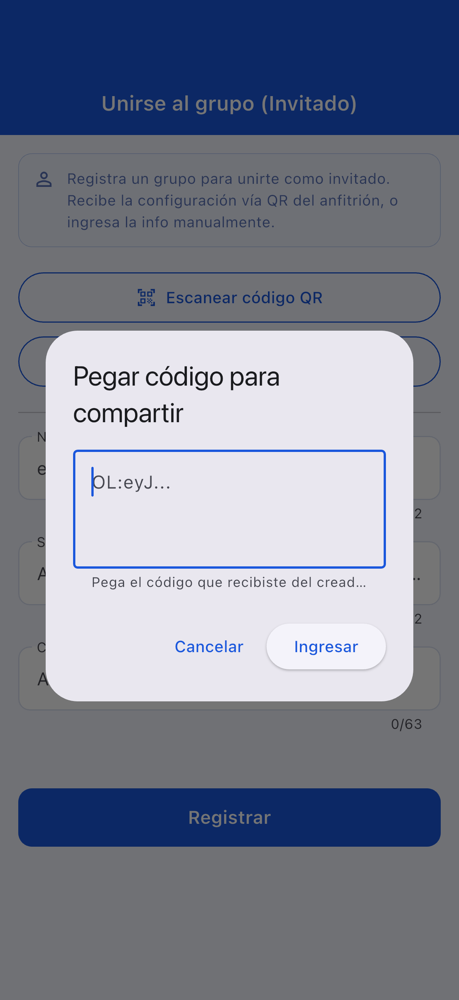
Paso 3: Una vez ingresada la información, toque «Registrar»
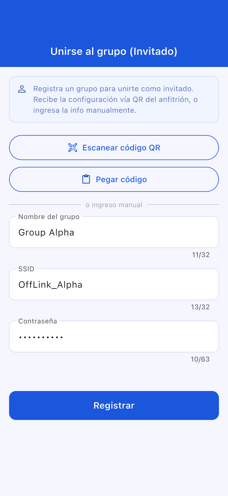
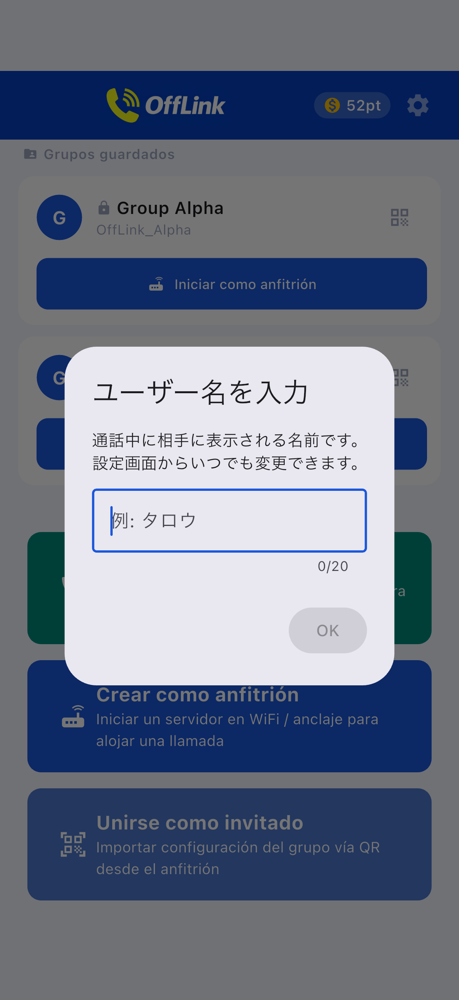
Pantalla de unión como invitado:
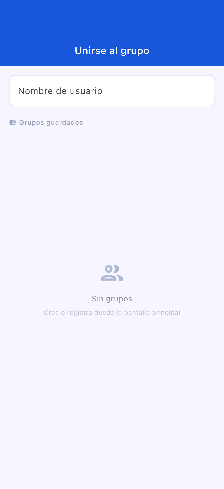
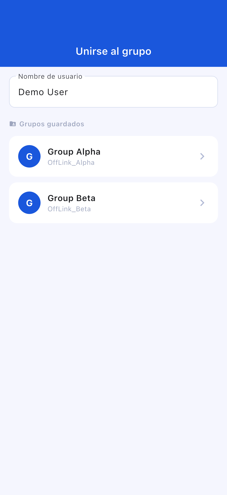
Pantalla de espera:
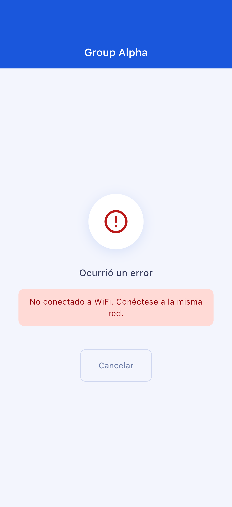
Pantalla de llamada:
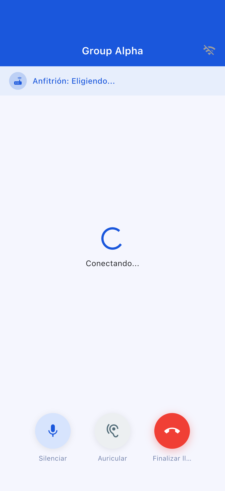
| Botón | Función |
|---|---|
| 🎤 Silenciar | Activar/desactivar el micrófono |
| 🔊 Cambiar salida de audio | Altavoz / Bluetooth / Auricular |
| 🔴 Finalizar llamada | Salir de la llamada |
| Nivel | Puntos consumidos | Participantes máximos |
|---|---|---|
| Standard | 10 pt | 4 personas |
| Large | 20 pt | 10 personas |
OffLink no tiene función de inicio automático del punto de acceso. Active manualmente la conexión compartida.
Vaya a «Ajustes» → «Aplicaciones» → «OffLink» → «Permisos» para modificarlos
| Elemento | Limitación |
|---|---|
| Número máximo de participantes | Standard: 4 / Large: 10 |
| Modo de comunicación | Solo WiFi LAN |
| Segundo plano | Limitado según el modelo del dispositivo |
| Límite de grupos guardados | Free: 5 / Premium: ilimitado |
| Elemento | Recomendación |
|---|---|
| Android | 5.0+ (API 21+) |
| iOS | 13.0+ |
| Batería | Se recomienda 80 % o más |
| Almacenamiento | 100 MB o más |
| WiFi | Router / Conexión compartida / WiFi portátil, etc. |